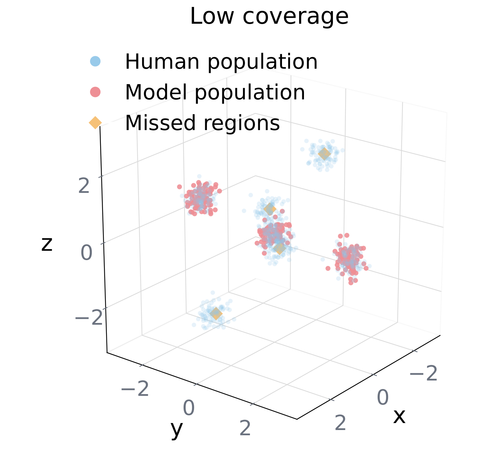

01

Coverage
Do agents span the full human space?
Fraction of human reference neighborhoods reached by at least one model-generated persona [?]. Low coverage means the model over-samples a modal region and neglects the tails.
Failure: tails missing, everybody piles on the center